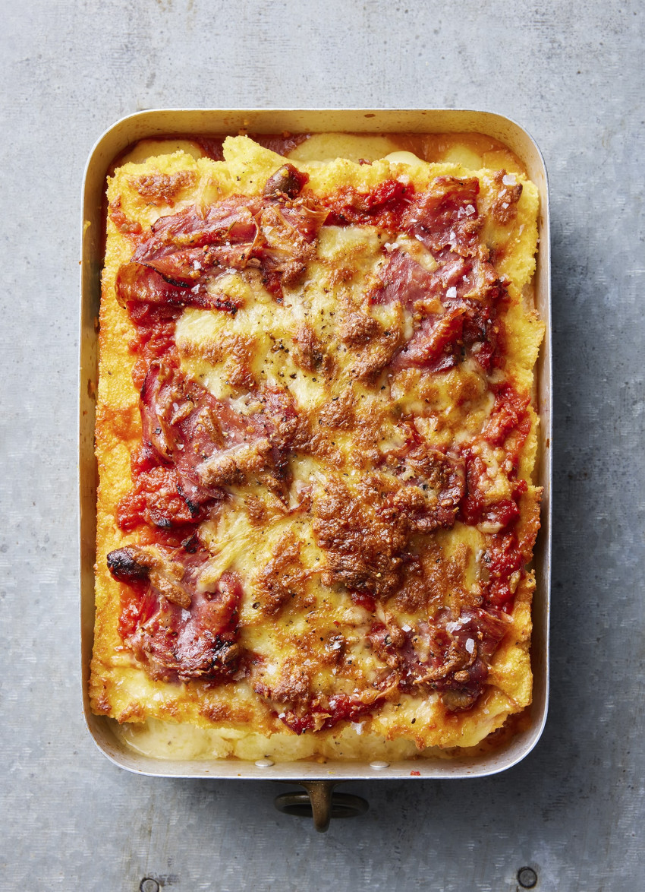

Baked Salami

Baked Salami
Baked chessy polenta with fennel salami, every bite with a beautiful taste. Served in several restaurants and hotels in the States
INGREDIENTS
- 6 cups milk, or use half milk, half water.
- 3 cloves garlic, crushed.
- 2 teaspoons sea salt.
- 1 teaspoon ground fennel.
- ground pepper.
- 350 grams instant polenta.
- 1 cup freshly grated parmesan.
- 2 tablespoons butter.
- 2 cups purchased, thick tomato pasta sauce – use your favourite flavour.
- 250 grams mascarpone.
- finely grated zest 1 lemon.
- 2 cups grated mozzarella.
- 80 grams thinly sliced fennel salami, roughly ripped.
- 1/2 cup basil leaves.
- extra parmesan, for serving.
STEPS(PREPARATION)
- Preheat the oven to 200°C fan bake.
- Heat the milk, garlic, salt and fennel with a good grind of pepper in a large saucepan. Bring to the boil, then drizzle in the polenta, whisking constantly until thick. Cook for 3 minutes until very thick. Remove from the heat and stir in the parmesan and butter. Tip into the shallow baking tin and spread evenly. Place in the fridge for 30 minutes to cool.
- Tip the polenta onto the bench and cut into two slabs (see Cook’s note). Spread half the pasta sauce in the base of the small roasting or baking dish and top with one piece of polenta. Spread over the mascarpone, lemon zest and half each of the mozzarella and salami, plus all the basil. Top with the second piece of polenta. Spread with the remaining tomato sauce, mozzarella and salami. Add a generous grating of parmesan and season with salt and pepper.
- Bake for 25 minutes, until golden and bubbling. Scoop out into dishes and serve with a big green salad.